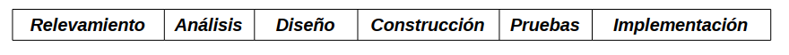

Metodologías Ágiles
Conociendo Scrum
¿Qué es el desarrollo ágil?
Metodología de proyectos adaptativa
Desarrollo de software adaptándose a los cambios
Project Management Institute
📒 PMI
👀 sobre la gestión de proyectos
- Muchos proyectos han fracasado y aún continúan haciéndolo
- Nos permite organizar mejor un proyecto
- Obtener mejores resultados del software
¿por qué fracasan los proyectos?
Los "porque" podrían ser casi infinitos
3 motivos de los que ninguno esta exento
- Lleva más tiempo del planificado
- Lleva más dinero del que se había pautado invertir
- Funcionalidades no resultan como se esperaba
no se puede prever con exactitud un proyecto de desarrollo de Software
¯\_(ツ)_/¯
¿Diferencia un Software de otro producto?
Es un producto no tangible
No puede conocerse hasta no estar concluido y poder probarse*
No obstante el software tiene grandes ventajas frente a otros productos
Inisitir en gestionar un proyecto de software de la manera tradicional sería un capricho 👶
Chaos Report
Standish Group 2009
32% Proyectos Software han sido exitosos
45% funcionalidades entregadas jamás se utilizan
PricewaterhouseCoopers
🔍 200 empresas > 35 países 🇧🇫🇧🇭🇧🇮🇧🇱🇧🇲🇧🇳🇧🇴
> 50% proyectos fracasan
optar por una u otra metodología,no puede basarse jamás, en un mero capricho, ya que es mucho lo que está en juego.
Diferenciando Metodologías de gestión
La forma de abordaje de un proyecto
🔮 alcance, costo y tiempo
🐯 Software con el mayor valor posible
Abordaje 🔨 software
Ciclo de vida implícitamente definido
SDLC
- Relevamiento
- Análisis
- Diseño
- Construcción
- Pruebas
- Implementación
🔮 tradicionales
encaran las fases de manera sucesiva
🐯 ágiles
solapan estás etapas

Comparación ⌛
entre ágil y predictivo

Conociendo Scrum ✨
Metodología ágil para la gestión de proyectos
Sprint 🏃
Iteración de tiempo limitado
📅 1 a 4 semanas
🎯 Transformar ítems requeridos en incremento de funcionalidad
Marco de trabajo de Scrum
Los 🤼♂️ de Scrum definen 3 roles
- Scrum Master
- Dueño del producto
- Equipo
6 ceremonias asegurar cumplimiento 🎯
- Reunión Planificación de entrega
- Reunión de planificación del Sprint
- El Sprint ❤️ Scrum
- Reunión diaria (daily)
- Reunión de revisión
- Reunión de retrospectiva
4 artefactos
aplicables a todos los procesos anteriores
- Backlog del producto
- Backlog del Sprint
- Scrum taskboard
- Diagrama de Burndow
Reunión Planificación de entrega
📅 1 vez por proyecto
👥 Scrum Master, Dueño del producto y Equipo
🎯 Definir alcance del proyecto